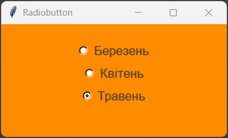
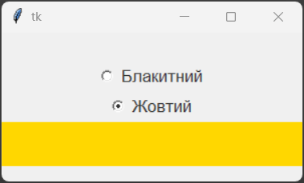
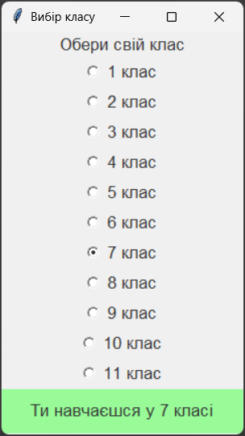
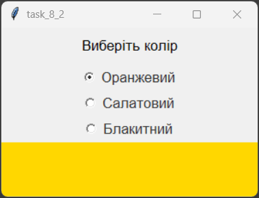
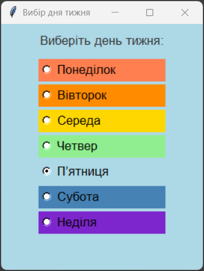

Віджет Radiobutton – клас перемикачів (радіокнопок). Цей віджет GUI дозволяє користувачеві вибрати тільки один з елементів набору. Коли користувач вибирає одину з радіокнопок, всі інші автоматично скидаються. Радіокнопки зазвичай використовуються для вибору одного варіанту з декількох можливих, наприклад, вибір статі, вибір кольору або вибір способу оплати.
Загальний синтаксис:
name = Radiobutton(window, options)
де, name – ім'я поля вводу, window – ім'я вікна, на якому розташовується поле, options – параметри поля.
Властивості Text:
| Властивість | Значення |
|---|---|
| width | Ширина радіокнопки в пікселях. |
| height | Висота радіокнопки в пікселях. |
| text | Текст, що відображається на радіокнопці. |
| background (bg) | Колір фону радіокнопки. |
| foreground (fg) | Колір тексту на радіокнопці. |
| borderwidth (bd) | Ширина рамки навколо радіокнопки в пікселях. |
| state | Стан радіокнопки. Може мати значення: "normal" або "disabled". |
| compound | Спосіб розміщення зображення та тексту на радіокнопці. Може мати значення: "left", "right", "top", "bottom", "center". |
| justify | Вирівнювання тексту на радіокнопці. Може мати значення: "left", "right", "center". |
| relief | Стиль рамки навколо радіокнопки. Може мати значення: "flat", "raised", "sunken", "groove", "ridge". |
| overrelief | Стиль рамки радіокнопки при наведенні на неї. Може бути: "flat", "raised", "sunken", "groove", "ridge". |
| font | Шрифт тексту на радіокнопці. Може бути заданий у вигляді рядка, наприклад: "Arial 12", або у вигляді кортежу, наприклад: ("Arial", 12). |
| image | Зображення, що відображається на радіокнопці. |
| selectimage | Зображення, що відображається на вибраній радіокнопці. |
| indicatoron | Показує, чи відображається індикатор вибору на радіокнопці. |
| value | Значення радіокнопки. |
| variable | Змінна, яка зберігає значення радіокнопки. |
Властивість variable використовується для зв'язування радіокнопки з певною змінною. Ця змінна буде зберігати значення вибраної радіокнопки. Коли користувач вибирає певну радіокнопку, змінна набуває значення, яке відповідає властивості value вибраної радіокнопки.
Наприклад, якщо у нас є група радіокнопок для вибору кольору, ми можемо створити змінну color і пов'язати її з усіма радіокнопками цієї групи. Кожна радіокнопка буде мати свою властивість value, наприклад: "red", "green", "blue". Коли користувач вибирає певну радіокнопку, змінна color набуває відповідного значення, що дозволяє програмі визначити вибір користувача.
Функції Radiobutton:
Функції Radiobutton дозволяють виконувати різні операції з радіокнопками, такі як отримання значення, встановлення значення та інші.
| Функція | Значення |
|---|---|
| get() | Повертає поточне значення радіокнопки. Це значення відповідає властивості value вибраної радіокнопки. |
| set() | Встановлює значення радіокнопки. Ця функція приймає аргумент, який відповідає значенню однієї з радіокнопок у групі. Після виклику цієї функції відповідна радіокнопка стає вибраною, і змінна, пов'язана з нею через властивість variable, набуває цього значення. |
| select() | Вибирає радіокнопку. Після виклику цієї функції радіокнопка стає вибраною, і змінна, пов'язана з нею через властивість variable, набуває значення, яке відповідає властивості value цієї радіокнопки. |
| deselect() | Скидає вибір радіокнопки. Після виклику цієї функції радіокнопка стає не вибраною, і змінна, пов'язана з нею через властивість variable, набуває значення None або іншого значення, яке відповідає не вибраній радіокнопці. |
1. Створимо програму, яка у вікні містить три перемикачі.
from tkinter import *
win = Tk()
win.title("Radiobutton")
win.geometry('300x150')
var = IntVar()
var.set(1)
rb1 = Radiobutton(win, text="Березень", variable=var, value=3, font="Arial 13").pack()
rb2 = Radiobutton(win, text="Квітень", variable=var, value=4, font="Arial 13").pack()
rb3 = Radiobutton(win, text="Травень", variable=var, value=5, font="Arial 13").pack()
win.mainloop()

2. Напишемо програму, яка створює вікно з двома перемикачами та міткою. Підписи перемикачів: «Блакитний», «Жовтий». При виборі перемикача, колір мітки змінюється відповідно.
from tkinter import *
root = Tk()
root.geometry('300x150')
val = StringVar()
val.set("light blue")
def color():
label.config(bg=val.get())
blue = Radiobutton(root, text="Блакитний", variable=val, value="light blue", fg="#333333", font="Arial 13", command=color).pack()
yellow = Radiobutton(root, text="Жовтий", variable=val, value="gold", fg="#333333", font="Arial 13", command=color).pack()
label = Label(root, height=2, fg="#333333", font="Arial 13")
label.pack(fill=X)
root.mainloop()

3. Напишемо програму, яка створює вікно з перемикачами для вибору класу, у якому ти навчаєшся. Обране значення повинно з'явитись в мітці з текстом "Ти навчаєшся у {номер класу} класі".
from tkinter import *
def f():
lab2.config(text=f"Ти навчаєшся у {val.get()} класі", font="Arial 13",fg="#333333", bg="pale green" )
root = Tk()
root.title("Вибір класу")
root.geometry("240x400")
lab1 = Label(root, text='Обери свій клас', font="Arial 13",fg="#333333")
lab1.pack()
val = IntVar()
val.set(1)
for i in range(11):
Radiobutton(root, text=f'{str(i+1)} клас', font="Arial 13", fg="#333333", variable=val, value=i+1, command=f).pack()
lab2 = Label(root, height=2, fg="#333333", bg="pale green",font="Arial 13")
lab2.pack(fill=X)
root.mainloop()

1. Розмістіть перемикачі за зразком 1. Підписи до перемикачів: "Оранжевий", "Салатовий", "Блакитний". При виборі перемикача мітка змінює колір відповідно до його назви. Файл з кодом програми збережіть у власну папку з іменем tk_8_01.py.
Зразок 1

2. Розмістіть перемикачі за зразком 2. Підписи перемикачів: «Понеділок», «Вівторок», «Середа», «Четвер», «П’ятниця», «Субота», «Неділя». При виборі перемикача, колір фону вікна змінюється відповідно до дня тижня: понеділок — червоний, вівторок — помаранчевий, середа — жовтий, четвер — зелений, п’ятниця — блакитний, субота — синій, неділя — фіолетовий. Файл з кодом програми збережіть у власну папку з іменем tk_8_02.py.
Зразок 2
